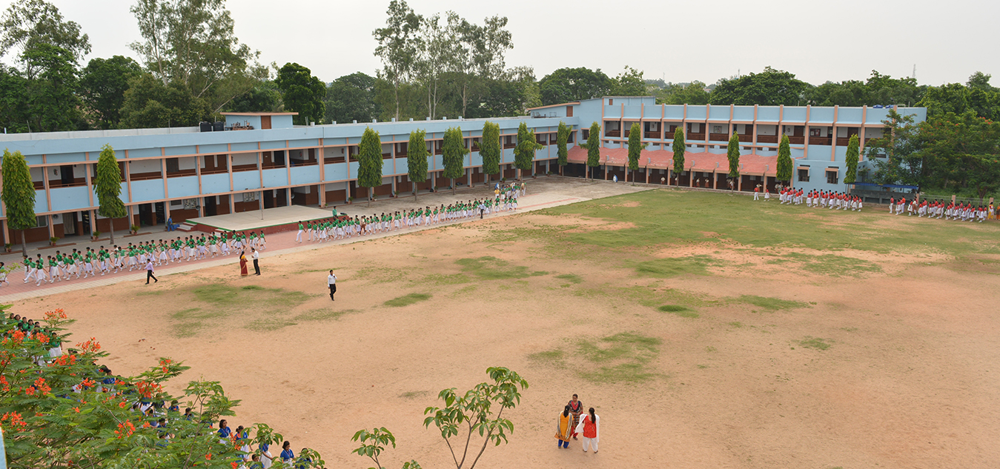
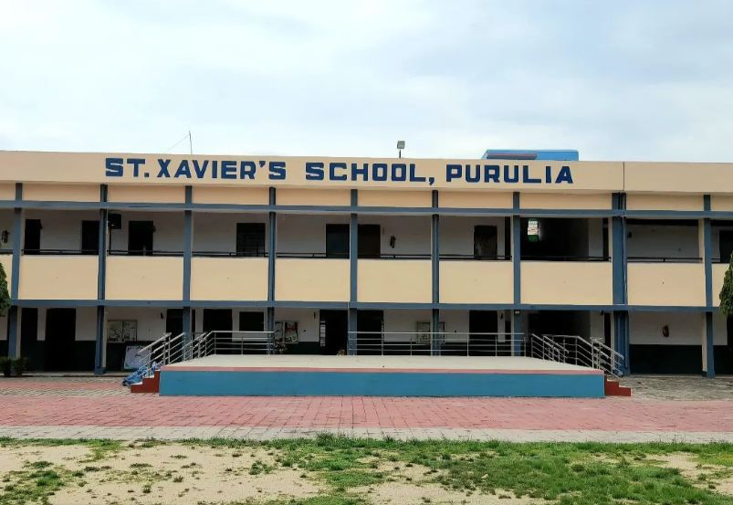
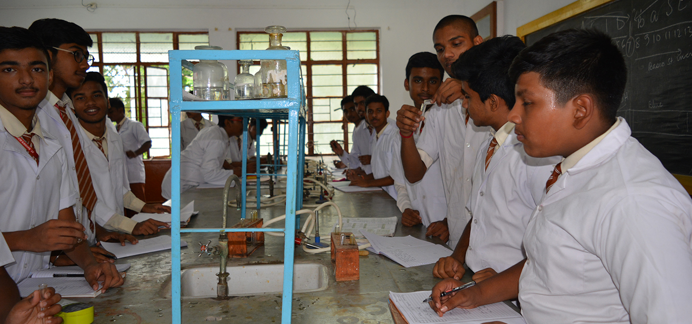
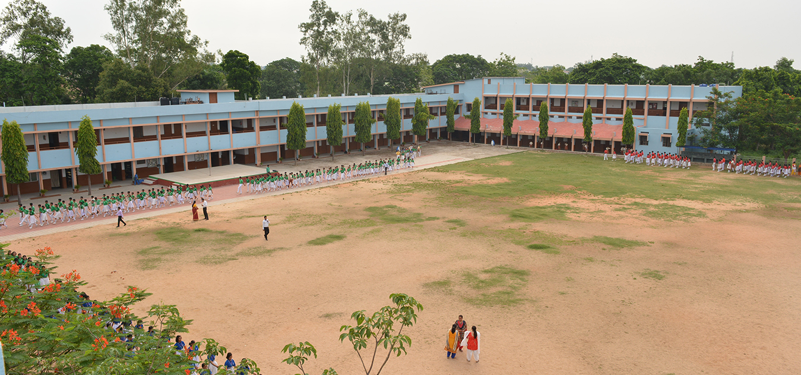
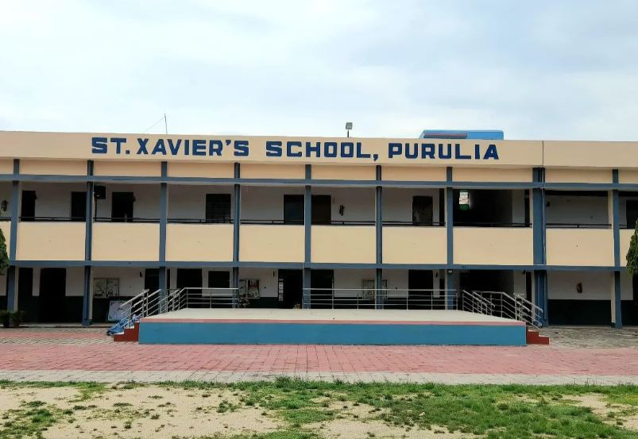
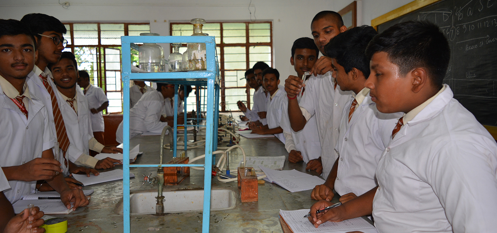

About Us
This school is an unaided Christian minority school which includes Classes from Nursery L.K.G, U.K.G, std. I to X. The curriculum of the Council for the Indian School Certificate Examinations, New Delhi is followed and the students are prepared for the ICSE Examinations. The medium of instruction is English. Bengali & Hindi are offered as second & third languages depending on the choice of subjects. St. Xavier's school receives no Government grant or private aid. The only financial resource is fees collected from the students. Hence, fees will have to be adjusted from time to time to keep up with rising costs ,salaries and maintenance. Since education at St. Xavier's is conducted through the medium of English, a high standard of English is required for success in the ICSE Examinations. Therefore, the use of English in the school campus in compulsory for all.
Aims & Objectives
The aim of St. Xavier’s School is to provide an atmosphere of communal harmony and integration in
which students devoid of caste, creed & place of origin develop into God fearing men & women with power &
insights to envision & to create a new loving & serving society in their mature years through their personal
commitment. The true product of St. Xavier’s will be a young man/woman made aware of his/her potentials, and
determined to use them not for selfish ends but for the good of others, thus, truly becoming a loving and
serving person. Hence, the aim of St. Xavier’s is to form integral, spiritual and personal formation of young
men and women so that they take to heart the well being of their fellow beings at all stages and levels. To
accomplish this, we uphold the following values.
1. To become spiritually oriented men and women of
character
2. To be selfless and dedicated to the service of their fellowmen
3. To be firm on the
principles of honesty, truthfulness, respect and discipline.
4. To uphold good values To become agent of
social change in the country.
5. To strive for excellence in every field.
6. To strive for
leadership in school through the various school activities
Gallery
 





MADE BY : Ayush Das | class - VI(C) | roll - 15